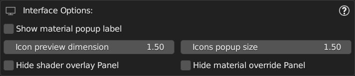
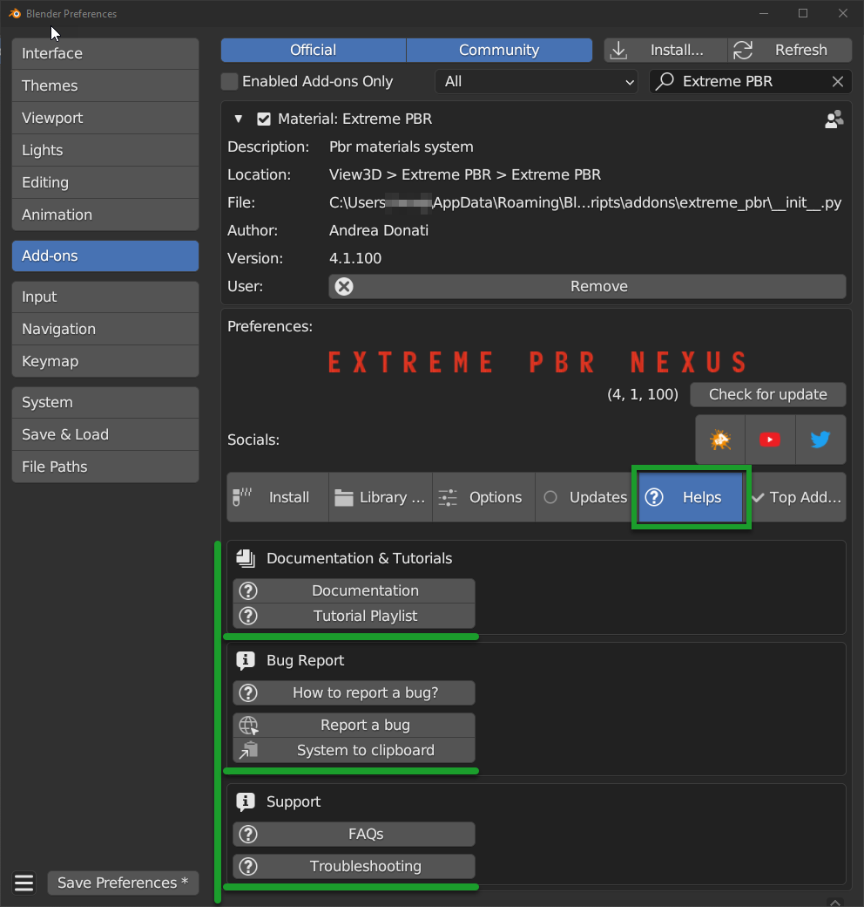

Preferences
In order to access the preferences there are several ways:
By Extreme PBR (If already installed and operational)
From the Extreme PBR panel, click on the Options button, this will open the preferences in the Options tab.

By Blender Preferences
From Blender’s main menu, select Edit and then Preferences, this will open Blender’s preferences window.
Go to Add-ons and search for Extreme PBR and click on the checkbox to activate it (If it’s not already active).
Options
The options are divided into several areas of interest:
General Options: Ref: General Options
Interface Options Ref: Interface Options
Fix Options Ref: Fix Options
Experimental Options Ref: Experimental Options

General Options

Bellow are explained the various properties
Material Type

This selector allows you to choose which type of setting to use when creating a material:
- Nexus:
This type of setting allows you to create materials in Nexus mode, this means that you will have access to the Texture Paint, described here: Texture Paint and to the creation of Fx Layers, described here: Fx Layer and to all its Dynamic Mask described here: Dynamic Mask
- Simple PBR:
This type of material setting allows you to create simple materials, so that you have “Light” materials for your project, the render will be much faster, but you will not have access to the functions of the Nexus materials. Simple PBR example is here: Material Editor (Simple PBR)
Check For updates Every

This property allows you to choose how often Extreme PBR should check for updates.
Important
I strongly advise you not to leave Never as a value, as Extreme PBR is constantly evolving and there may be important updates to fix bugs or add new features, so if you leave Never you will not see the new update alerts. you can always refer to Check For Updates described here: Check Addon updates

{kind=link}
{kind=link}
Show Group Options
Show Group Options allows you to show or hide the options of the Extreme PBR Nexus nodes, by default the options are hidden for a matter of node interface cleaning.
{kind=link}
Here is an example of what happens to the nodes when you activate or deactivate this Show Group Options:

Default Mapping Type
Default Mapping Type allows you to choose the default mapping type for the textures, by default the mapping type is UV

In order to see better what it is, refer to: Mapping Editor
Tip
You can always modify each Texture Image material individually at a later time. My suggestion if you have little experience is to leave UV as the default for now.
Texture Color Space
Texture Color Space allows you to choose the default color space for the textures, by default the color space is sRGB but this also allows you to choose other color spaces if you are using different ACES configurations.
Once you have chosen the color space, this will be applied to all the textures that will be created by Extreme PBR and also to those already applied.
{kind=link}
Hint
if your ACES list is very long, you can search by name, and the list will narrow down so as not to be confused. This tool was designed specifically for those who use ACES configurations other than the default one.
RGB
Rgb Color Space allows you to change the color space of all textures to RGB (Type diffuse, emission, etc …)

Important
This function will change the color spaces only of the materials applied with Extreme PBR, no material coming from other sources will be modified, nor those created manually. In addition, only nodes of type Image Texture will be identified
BW
BW Color Space allows you to change the color space of all textures to BW (Type normal, roughness, etc …)

Important
This function will change the color spaces only of the materials applied with Extreme PBR, no material coming from other sources will be modified, nor those created manually. In addition, only nodes of type Image Texture will be identified
Try to reset to default

This button, if pressed, will try to reset the color spaces of all textures to the default ones, sRGB and Non-Color, and also in the buttons RGB and BW Texture Color Space
Interface Options
From this section you can modify some settings of the Extreme PBR interface.
{kind=link}
Show material popup label
This option allows you to show or hide the preview material labels in the material browser popup. Reference here to the material Browser: Material Browser

Show material popup label On

Show material popup label Off

Icon Preview Dimension
This option allows you to change the size of the material preview icons in the Material Browser, reference here to the material Browser: Material Browser
{kind=link}
In this example the left panel can be much smaller.
Icon Preview Dimension 1.0 |
Icon Preview Dimension 1.7 |
|---|---|
|
{kind=link}
Icons Popup Size
This option allows you to choose the size of the icons of the material preview popup, reference here to the material Browser: Preview Popup
Example with Icons Popup Size 1.0

Example with Icons Popup Size 2.0
{kind=link}
Hide Shader Overlay Panel
This panel can be hidden if you want to have a less small addon interface.
Reference: Shader Overlay

Hide Material Override Panel
This panel can be hidden if you want to have a less small addon interface.
Reference: Material Override

Fix Options
In this section of the options, there are some tools dedicated to the Fix of some problems that may arise.
{kind=link}
Anti Crash
Anti Crash options, by default is activated, and it is used to avoid some anomalous crashes during the application of the material that occur on some compute and on others not.

What it basically does is to set the rendering engine to Eevee if you are in Cycles preview mode. I realize it’s quite annoying, but it’s the only way I’ve found to avoid these crashes.
Tip
I invite you to try to disable it and see if the problem persists, otherwise you can leave it disabled.
Find Lost Images
In the event that the image files to which the materials referred, have been moved (In the best case) This button opens a file browser where you can roughly indicate the folder that may contain sub folders with missing images inside. If the images are found, they are automatically reconnected to the materials.
{kind=link}
Attention
This operation could take a long time, depending on various factors: number of materials with lost images, number of folders to analyze and speed of the Hard Disk. Normally an SSD is much faster than an HDD and there will be much less time to complete the operation.
Purge ExtremeAddons Cache
Purge ExtremeAddons Cache allows you to delete the Json files contained in the ExtremeAddon folder where they are stored the access data for downloading materials and the paths of the libraries, in addition it deletes all the Json files that are have been downloaded in the addon, for example the json file with the keys that point to the documentation, or the json files that contain the data of the list of updates of the addon. This could be useful if those files are damaged in some cases.

Attention
Avoid if not strictly necessary to use this function, as the addon will have to download the json files that have been deleted again, and this if you are not connected to the internet will prevent you from using some functions of the addon.
Reload All Mixers
This button allows you to reload all the mixers in case some involuntary modification has been made even just to one of the Extreme PBR mixers present in the materials.
This analyzes all the materials and if it finds even just 1 mixer in the material, it replaces it with a default mixer, fixing some situations that may have been created unintentionally.

Note
This button analyzes and searches only the materials of type Nexus which are those where the mixer from 1 to 4 channels is present, so all the materials that do not contain the mixer will be bypassed.
Adjust All Material Node Tree
Useful in case there are strangely black materials or with colors that do not correspond to those they should have
This button is useful to check and if necessary adjust all the materials present in the scene (Only the materials created with Extreme PBR) Below is an example of what this button does:

- Analyze incompatible nodes
It can happen that by switching from one version to another, some Blender nodes are incompatible with the previous version or vice versa, this button analyzes all the materials and tries to find the “Unknown” nodes and replaces them with a node compatible.
- Reconnect the disconnected nodes
It could happen that involuntarily (Or for some bug of abnormal stop during the creation of the material) some nodes have been disconnected or not connected, this button analyzes all the materials and tries to find the disconnected nodes and reconnects them. Especially useful with Nexus nodes that are very complex.
See also
In order to set Extreme PBR with Nexus type materials, refer here: Material Type To take a look at the difference between Nexus nodes and Simple PBR nodes, refer here: Material Nexus type
Regenerate All Previews And Icon
Use Case: It happened that during an Alpha version of Blender, when the Icon Images were loaded into the addon, for some strange reason, it seemed that they were damaged, I am not yet very clear about the reason, in any case this has been inserted specifically to regenerate all the icons and previews of the materials, so as to have a correct and functioning preview.
Important
If you are experiencing problems only with a few icons contained in the Extreme PBR material preview, described here: Material Browser it will be sufficient to use the Reload Preview Icons button to reload only the icons contained in the selected category.
Experimental Options
In this section you will find some experimental options.

I Have an Account on Extreme Addons
By activating this checkbox, the addon will be set up so that it can download the materials directly from the site and have access to the Extreme Addons TAB described here: Step 1 (Addon Activation)

Note
With the advent of file.exapack we have also made the library files available directly on the sites where you will purchase the addon. So a new installation system (Already tested on Extreme PBR, another of our addons) is available by default. If you want to change and go back to the classic one, activate this option.
Important
For all users who have an account on Extreme-Addons.com it is recommended to activate this option.
Show creator utility
By activating this checkbox, you will activate an interface created specifically to create libraries for Extreme PBR. This is a very powerful tool, but it requires attention. Creator Utility

Attention
If you are not sure what you are doing, I recommend that you leave this option disabled, as you could damage the Default Library library of Extreme PBR. If you have doubts, contact me here: How can I contact you for assistance?
Show Download Debug
This checkbox is the one I use to check that the library downloads work correctly, if activated it will show in the library download interface, some additional messages that can be useful to understand any problems.

Tip
I suggest you leave the option disabled so as not to create confusion. If you really want to activate it, do it only if you are sure of what you are doing.
Help
From this Help section you can access some useful sections contained in the documentation.
{kind=link}
Updates
This section allows you to check for updates to the addon, both for the addon itself (Extreme PBR) both for the libraries, so check if there is news for the libraries.
The addon in accordance with the settings you have chosen, checks if there are updates, and if there are, it warns you with a message, but from here in any case you can check for yourself whenever you want.
{kind=link}
Show Addon Updates
By Show Addon Updates button you can expand the section dedicated to addon updates.
{kind=link}
Check Addon updates
By this button, you can instantly check if there are updates without having to wait for the timer automatically to check for updates (Described here: Check For updates Every)
{kind=link}
{kind=link}
Updates List Version
Here you can find the list of updates of the addon, with version, release date and changes made.
{kind=link}
Here will be indicated:
With an arrow, it will be shown where you are exactly with your current version.
By pressing the arrow-shaped button, you can show the detailed description of each update.
Show Library Updates
This button expands the section dedicated to library updates.
This section allows you to keep track of the installed libraries, and to check if there are updates for them. All packages with the green check mark are installed in the addon library. Remember that you must have the libraries connected to the addon to use this menu. So make sure you have connected the libraries you want to check to the addon.
{kind=link}
Important
In the left column, the Online Packs will be shown which are the packages that are available.
In the right column, the Installed Packs will be shown which are the packages that are installed in the your library.
If you don’t see the left or right column, press the buttons above the columns respectively. explained below
Check Library Updates
This button allows you to check if there are updates on the libraries.
{kind=link}
Try compile Exapack
This button is used, Especially if you come from a version of Extreme PBR prior to 4.1.100 to compile the list of volumes, this button analyzes all the files you had already installed from the library, and checks the Exapacks volumes online, if all the files are contained in an Exapack at least, it will be compiled, and then inserted in the list on the right so that you can actually check what you have installed and what not, even if you come from a version of Extreme PBR prior to this system.
{kind=link}
Remove Volume
This button allows you to remove the volume and all its files from the library.
{kind=link}
Warning
This action is irreversible, if you delete the volume, the backgrounds of the library that were contained in this volume, will be deleted!
Top Addons
From this section you can access a list of Addons that I recommend you take a look at, if you are a 3D artist addon creator and would like to be included in this list, contact me. How can I contact you for assistance?

Libraries
From this section you can indicate the paths of the libraries you want to use, and you can also add new ones.
{kind=link}
Note
If you are installing the addon for the first time, refer to this guide and do not dwell on this section at the moment. New Installation (4.1.100 and up)
Libraries Assignments
In this section you have the possibility to Assign / Change / Remove the paths of the libraries, or add the expansions, type Cyber Holograms link Here:
Choose Default Library
By this button you can assign the default library only if you have already installed it previously, you will have to indicate the path to the folder with the name of the library, normally it is: EXTREME_PBR_DEFAULT_LIB the button will open a file browser to search for the folder path.

Note
If you have never installed or want to reinstall the libraries, refer to this guide: New Installation (4.1.100 and up)
Unlink Library
By this button that will be visible only if a path is linked, it can be removed.

Choose User Library
By this button you can assign the user library only if you have already installed it previously, you will have to indicate the path to the folder with the name of the library, normally it is: EXTREME_PBR_USER_LIB the button will open a file browser to search for the folder path.
Note
The user library is a library that is empty at the beginning, so it will be useful if you want to save your materials, Here is the section on saving materials, here the reference: Save Editor
{kind=link}
Make User Library
If you don’t have a User Library, and the Default Library is already linked, this button creates the folder EXTREME_PBR_USER_LIB in the same path that contains the Default Library, this to avoid having the libraries in different paths.
Example of path:
Your Path
|
+--EXTREME_PBR_DEFAULT_LIB
+--EXTREME_PBR_USER_LIB <--- This folder will be created by the button
{kind=link}
Note
This button will appear only if the Default Library is correctly linked
Expansion Name
Once you have added a new expansion, through the button Add Library (Expansion) you can rename the name as you like believe the name, this will serve you to be able to identify the library in the list of libraries of the main panel of Extreme PBR. The library will be displayed in Library Selector (Drop-down menu)

Expansion Path
Once you have added a new expansion, through the button Add Library (Expansion) you can indicate the path where the library is located, this will serve you to be able to identify the library in the list of libraries of the main panel of Extreme PBR. The library will be displayed in Library Selector (Drop-down menu)

Remove Expansion
By this button you can remove the expansion on the same line.
{kind=link}
Add Library (Expansion)
By this button, you will add a slot for a new library, it will default to the name Expansion Name Here this to suggest to change the name in the text field.
{kind=link}
Note
If you add an invalid or non-existent path, the library will not be shown in the Library Selector (Drop-down menu)